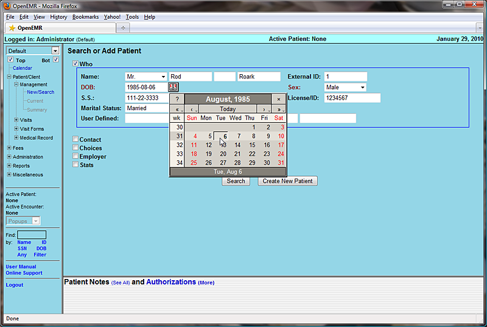
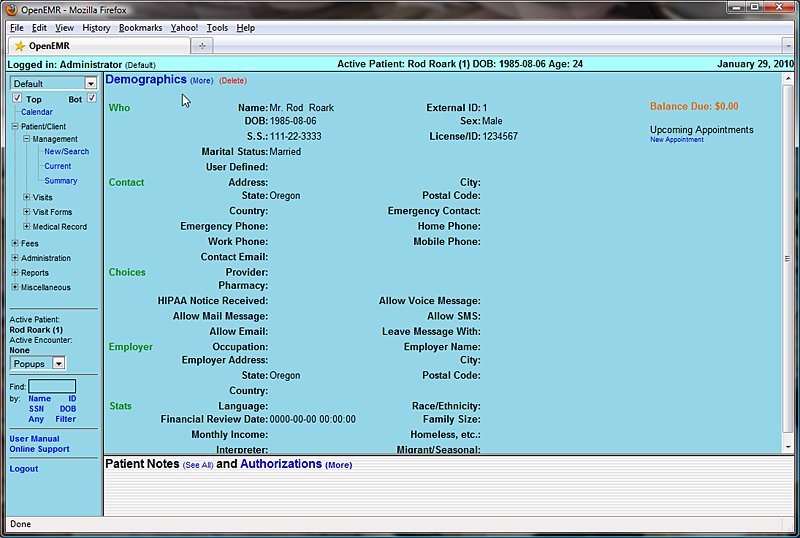
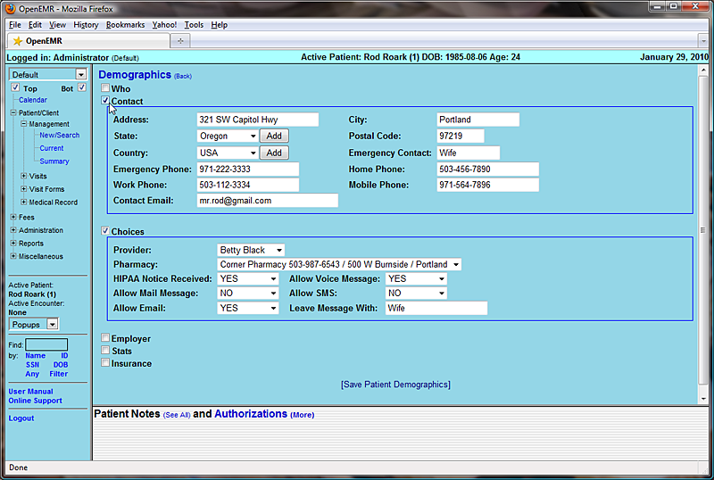
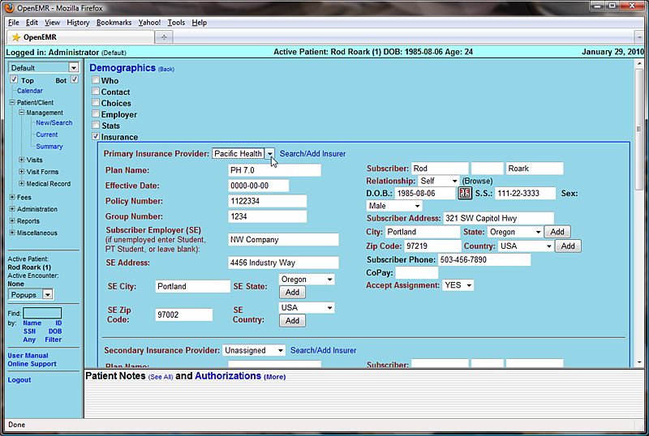
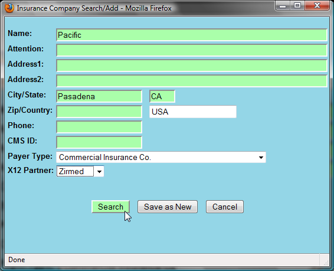
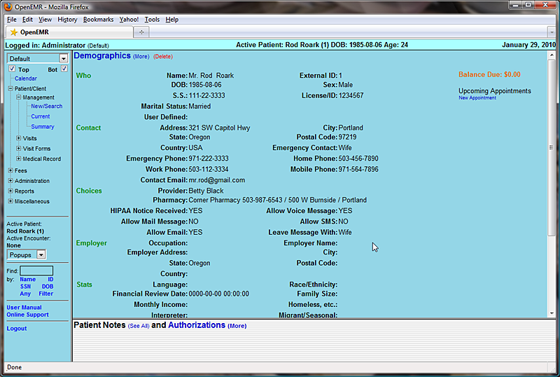
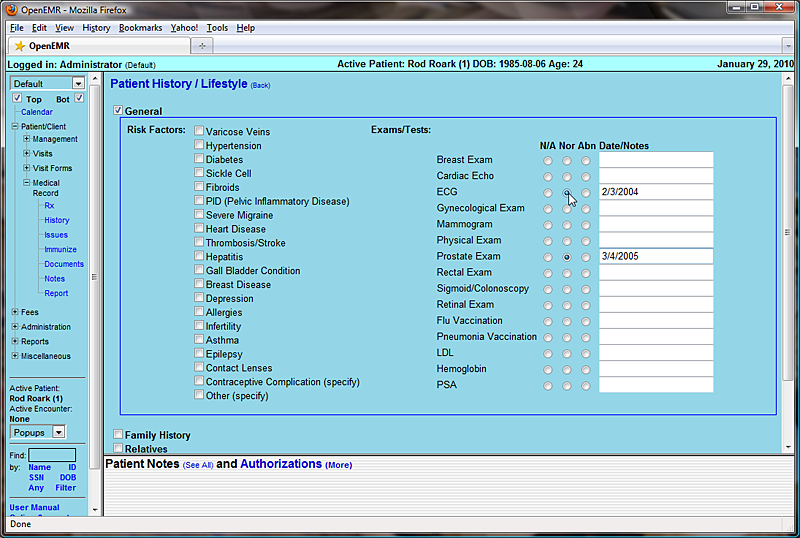
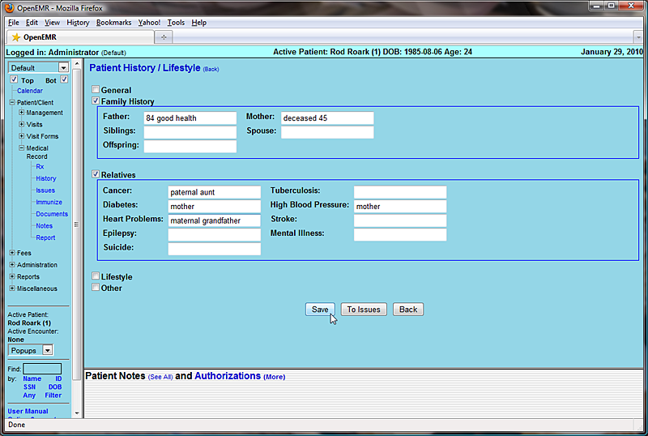
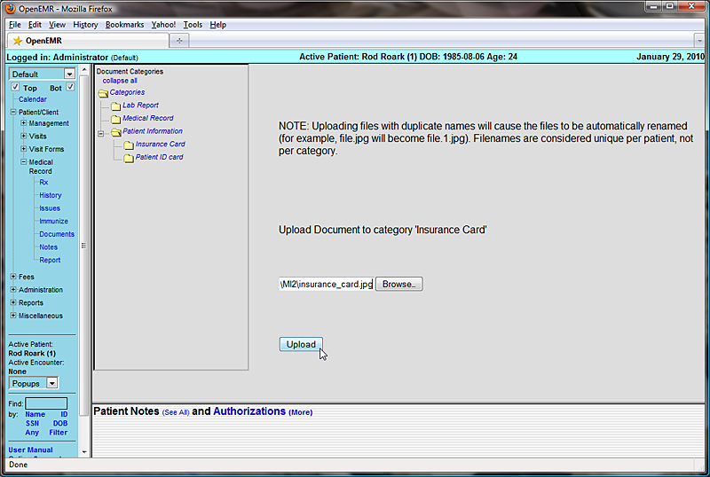
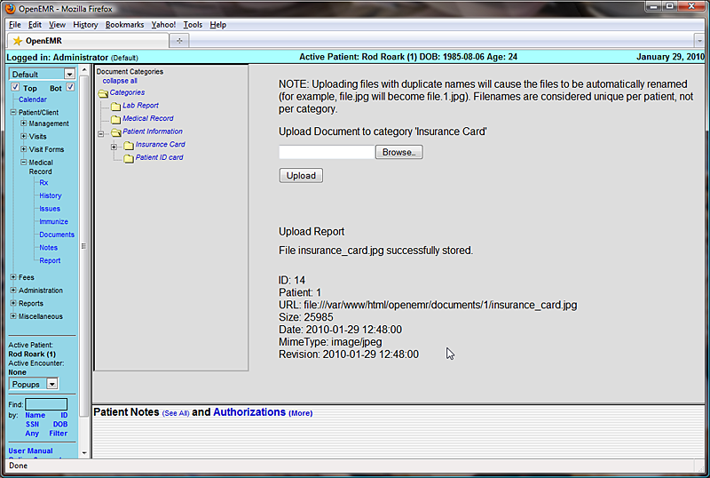

Once you have entered all the necessary clinic information you can begin entering patient data.
Select 'Patient/Client – Management – New/Search' in the navigation menu on the left of the screen to begin entering a new patient into the system.
In the Search or Add Patient page enter the patient's name & birth date. If you have an existing chart for this patient, you may enter the chart number under 'External ID'. If you do not enter a number the system will automatically assign one that is equal to its internal patient ID. When you are finished click 'Create New Patient'.
Note: Clicking the calendar button next to the “DOB” field will pop up an easy to use date selection tool found throughout the OpenEMR program. Simply click the arrows to the right or left of “Today” to advance the date forward or back a single month or year, or hold an arrow down to select the month or year manually. Selecting the day of the month will then fill the selected date into it's respective field in the proper format (YYYY-MM-DD)
You should now be presented with the patient Demographics page, which contains a summary of the patient's identifying information, including employment, insurance and provider information.
Notice that all of the patient related pages are now accessible via the navigation menu to the left.
To continue entering patient information click 'Demographics (more)' at the top of the page.
This will bring up a series of expandable sections containing inputs for the various types of patient data. Click the checkbox next to the section or sections you would like to work with and fill in the desired fields. Note that fields labeled in red are required in order for billing to work properly.
Continue entering data as necessary.
The last section in the Demographics area is the Insurance section.
Select the patient's insurance company from the drop-down list, or you can search for it by clicking 'Search/Add Insurer'. Doing so brings up a dialog box containing several fields which are searchable (labeled in green). Entering a partial value into one or more fields and clicking the 'Search' button pops up a second dialog containing a list of all insurance companies matching those parameters.
Selecting the desired name from the list will automatically make it the selection for that patient.
If the desired insurance company is not yet entered, you can also add it here by completing all the fields and clicking 'Save as New'. This also selects the newly added insurance company for this patient.
If the patient is the also the insured party, then selecting “self” from the drop-down list will automatically populate the “subscriber” section with the relevant data for you.
When you are finished, click 'Save Patient Demographics' at the bottom of the page to save and return to the Demographics summary. You can see that all of the new patient data is now visible on the summary page.
Next select 'History' from the navigation menu on the left side of the screen. (under 'Patient/Client – Medical Record') This brings up a summary page containing information about the patient's medical history.
Clicking on 'Patient History / Lifestyle (more)' will bring up a data entry page with expanding sections, similar to that of the Demographics page.
Access the desired sections by clicking on the appropriate check box, and enter in the patient's data as necessary, then click 'Save'.
Select 'Patient/Client – Medical Record - Documents' from the navigation menu on the left. Here you may upload files that you have scanned and/or saved, such as a patient's ID or insurance card.
First, click the appropriate Document Category for the file you wish to upload, then click 'Browse'. This will present you with the standard dialog for locating the file on your computer. Once the desired file has been selected, click 'Upload' to save the file in OpenEMR.
Once the file is uploaded, you will be presented with a report, confirming the file has been uploaded successfully. To see the new file, click on the arrow next to the appropriate document category which displays a list of all the files in that category. Click on the name of the new file to view it.
Here you can also attach a note to the document, associate it with a particular issue, or move it to a different category or patient.